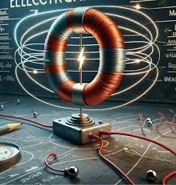
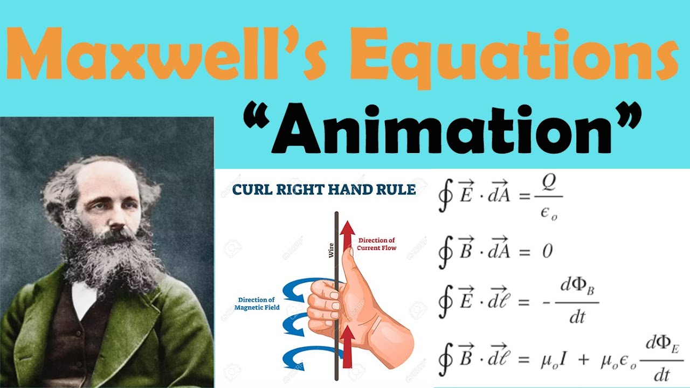

Profile
Introduction

- Electromagnetism is one of the four fundamental forces of nature and is crucial in explaining how charged particles interact through electric and magnetic fields. It provides the basis for understanding how electricity, magnetism, and light are interrelated and has applications across virtually every field of science and engineering.
Maxwell Equations

- Gauss’s Law for Electricity: Relates electric fields to charges.
- Gauss’s Law for Magnetism: States that there are no magnetic monopoles.
- Faraday’s Law of Induction: A changing magnetic field induces an electric field.
Electromagnetic Waves
- Wave Nature: Electromagnetic waves are transverse waves consisting of oscillating electric and magnetic fields perpendicular to each other and to the direction of propagation.
- Speed of light:In a vacuum, all electromagnetic waves travel at the speed of light, c=3×10⁸m/s.
- Spectrum:Electromagnetic waves encompass a wide range of wavelengths and frequencies, from radio waves (long wavelengths, low frequency) to gamma rays (short wavelengths, high frequency).
Applications of Electromagnetism
- Electric Motors and Generators:Based on the principles of electromagnetic induction, motors convert electrical energy into mechanical energy, and generators do the reverse.
- Communication Systems:Radio waves, microwaves, and other parts of the electromagnetic spectrum are used for transmitting data in television, radio, cell phones, and Wi-Fi.
- Medical Imaging:MRI (Magnetic Resonance Imaging) uses strong magnetic fields to create images of the body’s interior.